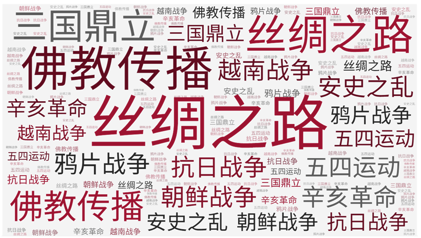
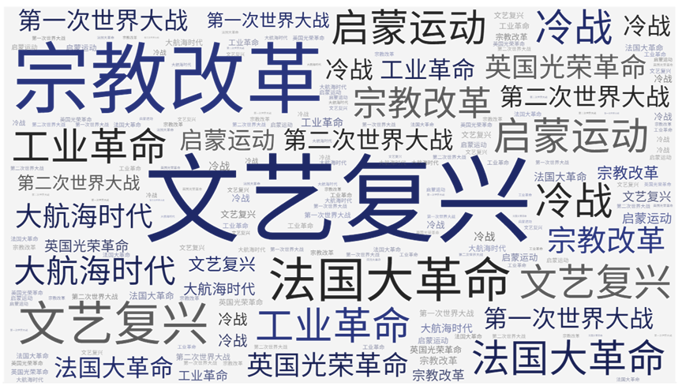

Quarterly High-Frequency Hot Word Cloud
季度高频热搜词云
季度高频热搜词云的意义在于它提供了一种直观的方式来展示和理解每个季度内公众最关注的历史事件。 这种词云是基于大量的网络搜索数据生成的，反映了人们在特定时间段内对历史事件的兴趣和关注。 每个季度的高频热搜历史事件词云都有其独特的意义和价值。 它不仅揭示了该季度内最受关注的历史事件，还能反映出社会热点、公众情绪和时代变迁。
东方史高频热搜词云

东方史高频热搜词云体现了时代变迁对公众历史认知的影响。 随着社会的发展和时代的进步，公众对历史事件的兴趣和关注点也在不断变化。 通过对不同时期的词云进行对比分析，我们可以观察到公众对东方历史的关注点是如何随时间转移的，从而更深入地了解历史与现实的互动关系。 东方史高频热搜词云具有重要的历史和文化意义，它为我们提供了一个独特的视角，帮助我们更好地理解和把握东方历史的脉络和精髓。 同时，它也为我们提供了一个宝贵的资源，用于研究公众历史认知的演变和发展。
西方史高频热搜词云

西方史高频热搜词云深刻揭示了公众对西方历史事件的持续关注与高度兴趣。 这一词云凝聚了历史记录以来西方地区最受瞩目的历史事件，通过大规模搜索数据的整合与呈现，为我们提供了一个直观而全面的视角来观察和理解西方历史的脉络与特色。 西方史高频热搜词云不仅展现了西方历史的丰富性和复杂性，还凸显了西方文明在世界历史进程中的核心地位。 从古代罗马帝国的辉煌，到中世纪教会的权威，再到近代工业革命的崛起，以及两次世界大战的震撼，这些高频热搜词云中的历史事件，都是西方历史进程中不可或缺的重要篇章。